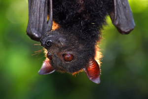
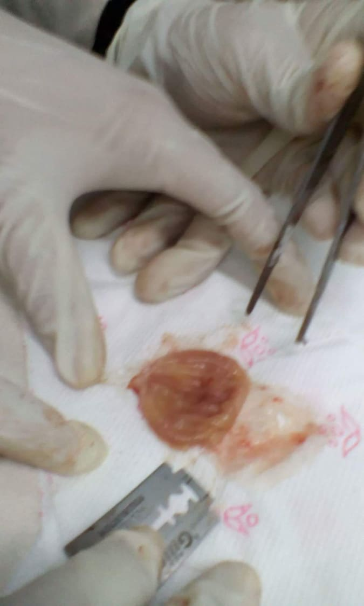

1. The Palawan fruit bat (Acerodon leucotis), also known as the Palawan flying fox, is a species of megabat found in forests of Palawan,Balabac and Busuanga in the Philippines. It is listed as vulnerable by the IUCN and is declining due to hunting and habitat loss.
Kingdom: Animalia
Phylum: Chordata
Class: Mammalia
Order: Chiroptera
Family: Pteropodidae
Genus: Acerodon
Species: A. leucotis
 2. The Philippine flat-headed frog (Barbourula busuangensis) is a species of frog in the Bombinatoridae family. It is also known under the common names “Busuanga jungle toad”, “Philippine aquatic frog”, “Busuanga disk-tongued toad”, and “Busuanga discoglossid frog” (the last two names reflect the earlier placement of the genus Barbourula in the family Discoglossidae, but are misleading under current taxonomy). It is endemic to the Busuanga, Culion, Balabac, and Palawan islands in the Philippines. Its natural habitats are tropical dryforests, moist lowland forests, moist montane forests, rivers, and intermittent rivers. It is threatened by habitat loss.
2. The Philippine flat-headed frog (Barbourula busuangensis) is a species of frog in the Bombinatoridae family. It is also known under the common names “Busuanga jungle toad”, “Philippine aquatic frog”, “Busuanga disk-tongued toad”, and “Busuanga discoglossid frog” (the last two names reflect the earlier placement of the genus Barbourula in the family Discoglossidae, but are misleading under current taxonomy). It is endemic to the Busuanga, Culion, Balabac, and Palawan islands in the Philippines. Its natural habitats are tropical dryforests, moist lowland forests, moist montane forests, rivers, and intermittent rivers. It is threatened by habitat loss.
Kingdom: Animalia
Phylum: Chordata
Class: Amphibia
Order: Anura
Family: Bombinatoridae
Genus: Barbourula
Species: B. busuangensis
3. The Philippine dwarf kingfisher (Ceyx melanurus) is a species of bird in the Alcedinidae family that is endemic to the Philippines.
Kingdom: Animalia
Phylum: Chordata
Class: Aves
Order: Coraciiformes
Family: Alcedinidae
Subfamily: Alcedininae
Genus: Ceyx
Species: C. melanurus
4. The Philippine flying lemur (Cynocephalus volans), known locally as the kagwang, is one of two species of flying lemurs, the only two living species in the order Dermoptera. Additionally, it is the only member of the genus Cynocephalus. The other species is the Sunda flying lemur. Recent research from genetic analysis suggests two other species, the Bornean flying lemur and the Javan flying lemur, may exist, as well, but they have yet to be officially classified so. Although called a flying lemur, it cannot fly and is not a lemur. Both species of Dermoptera are classified under the superorder Euarchonta which includes the Scandentia and the primates, as well as an extinct order of mammals, the Plesiadapiformes.
Kingdom: Animalia
Phylum: Chordata
Class: Mammalia
Order: Dermoptera
Family: Cynocephalidae
Genus: Cynocephalus
Species: C. volans
5. The Samar Squirrel (Sundasciurus samarensis) is a species of rodent in the Sciuridae family. It is endemic to the Philippines. Its naturalhabitat is subtropical or tropical dry forests.
Kingdom: Animalia
Phylum: Chordata
Class: Mammalia
Order: Rodentia
Family: Sciuridae
Genus: Sundasciurus
Subgenus: Aletesciurus
Species: S. samarensis
6. The Visayan broadbill (Eurylaimus samarensis) is a species of bird in the Eurylaimidae family. It is endemic to the islands of Samar,Leyte and Bohol in the central Philippines.
Kingdom: Animalia
Phylum: Chordata
Class: Aves
Order: Passeriformes
Family: Eurylaimidae
Genus: Sarcophanops
Species: S. samarensis
 7. The Palawan flycatcher (Ficedula platenae) is a species of bird in the Muscicapidae family. It is endemic to the Philippines.
7. The Palawan flycatcher (Ficedula platenae) is a species of bird in the Muscicapidae family. It is endemic to the Philippines.
Kingdom: Animalia
Phylum: Chordata
Class: Aves
Order: Passeriformes
Family: Muscicapidae
Genus: Ficedula
Species: F. platenae
8. The Kalinga narrowmouth toad (Kaloula kalingensis) is a species of frog in the Microhylidae family. It is endemic to the Philippines. Its natural habitats are subtropical or tropical moist lowland forests, subtropical or tropical moist montane forests, arable land, pastureland, and plantations.
Kingdom: Animalia
Phylum: Chordata
Class: Amphibia
Order: Anura
Family: Microhylidae
Genus: Kaloula
Species: K. kalingensis
9. The Mindanao treeshrew (Urogale everetti), also called the Philippine tree shrew, is a species of treeshrew endemic to the Mindanaoregion in the Philippines. It is the only member of the genus Urogale. The scientific name commemorates British colonial administrator and zoological collector Alfred Hart Everett.
Kingdom: Animalia
Phylum: Chordata
Class: Mammalia
Order: Scandentia
Family: Tupaiidae
Genus: Urogale
Species: U. everetti
10. The Mindoro Black Rat (Rattus mindorensis) is a species of rodent in the family Muridae. It is found only in the Philippines.
Kingdom: Animalia
Phylum: Chordata
Class: Mammalia
Order: Rodentia
Family: Muridae
Genus: Rattus
Species: R. mindorensis
Top 10 Most Critically Endangered Species Philippines
#10: PHILIPPINE CROCODILE
Yes, if it had its way it may not hesitate in taking a chunk out of your limbs. Careful there!
But the opposite is true. Through the years, many of these Mindoro crocodiles – endemic only to the Philippines – have disappeared falling prey to relentless hunters. Mighty and dangerous may the Philippine Crocodile be, its hide is a prized catch, an expensive material for fashion accessories (e.g., bags, shoes).
So if you truly love our very own endangered animals, be wary of what you buy in those slick exclusive fashion bazaars!
Unlike the saltwater crocodile Lolong, said to be the world’s largest crocodile at 21 feet long weighing 1,075 kilos, Philippine Crocodiles also called as Mindoro Crocodile are much smaller growing 3 meters or less than 10 feet (almost half of Lolong).So it’s not the big saltwater crocs that are endangered, it’s their smaller cousins.
Scientific Name: Crocodylusmindorensis
Common Name: Philippine freshwater crocodile
Habitat: Mindoro, only about 100 left
Kingdom: Animalia
Phylum: Chordata
Class: Reptilla
Order: Crocodilia
Family: Crocodylidae
Genus: Crocodylus
Species: C. Mindorencis
#9:THE MINDORO BLEEDING-HEART
Its heart must be bleeding saddened by its fate.
Another species that is fighting for its very existence is the Mindoro Bleeding-heart, a type of ground dove with the unmistakable red markings on its chest. The sad reality is most, of its natural habitat has been cleared as majority, if not all, of the primary forests of Mindoro have been cleared.
Scientific Name: Gallicolumbaplatenae
Common Name:Kulo-kulo
Habitat: Mt. Siburan, Mindoro
Kingdom: Animalia
Phylum: Chordata
Class: Aves
Order: Columbiformes
Family: Columbidae
Genus: Gallicolumba
Species : G. Platenae
#8:RUFOUS-HEADED HORNBILL
This bird with a lot of weight on its horn, is found only in the Philippines. Yes, you’re right. No other country has this mighty specie.
That fact alone should make us proud. Had it stayed that way. The thing is the Kalaw or rufous-headed is in an extremely rapid population decline or in plain English their numbers are dying. It’s a shame that we can’t take care of such a wonderful bird treasure.
Scientific Name: Aceroswaldeni
Common Name:Kalaw
Habitat: Panay, some part of Zamboanga del Norte, extinct in Guimaras
Kingdom: Animalia
Phylum: Chordata
Class: Aves
Order: Bucerotiformes
Family: Bucerotidae
Genus: Rhabdotorrhinus
Species: R waldeni
#7:HAWKSBILL SEA TURTLE
Again here is a story of how a wonderful creature can be lost in the face of the Earth all because of human impact.
Distinguished for its narrow, pointed beak that earned it its name as “Hawk’s bill”, this medium-sized vegetarian of a turtle has been under heavy attack from humans in general, and Filipinos in particular who hunt them for their meat and for their shells which are prized material for many accessories in the fashion industry.
Scientific Name: Eretmochelysimbricata
Common Name:pawikan
Habitat: global
Kingdome: Animalia
Phylum: Chordata
Class: Reptilla
Order: Testudiness
Sub order: Cryptodira
Family: Cheloniidae
Sub family: Cheloniinae
Genus: Eretmochelys
Species: E. Imoricata
#6:RED-VENTED COCKATOO
You can never mistake this 12 inch-long cockatoo made up of just two colors: white and red. Like a priest out to say Holy Massthis bird is all-white with red feathers around the vent.
Perhaps because of its strikingly-clean personality, the red-vented has become a victim of the cage-bird trade with a bird fetching as much as $160 in Manila. And that was in the late 90’s.
Scientific Name: Cacatuahaematuropygia
Common Name:Katala, Kalangay
Habitat: Palawan, only about 180 left
Kingdom: Animalia
Phylum: Chordata
Class: Aves
Order: Psittaciformers
Suborder: Cacatuidae
Family: Cacatua
Genus: Licmetis
Species: C. Haematuropygia
#5:PHILIPPINE FOREST TURTLE
This turtle may have gotten a misnomer as it is totally not endemic to the island of Leyte but only in the Palawan island group.
You can easily distinguish this land turtle by its ginkgo-shaped vertebral scutes (at its back). Also, a line which is colored pale white to yellow traverses across its head behind the ears.
They are prized as pets and ranks as one of the most commonly confiscated species in the Philippines with overseas buyers visiting the islands to collect them. However, sadly, the Philippine forest turtle do not do well in captivity making them avery vulnerable species.
Scientific Name: Siebenrockiellaleytensis
Common Name: Palawan turtle
Habitat: Palawan
Kingdom: Animalia
Phylum: Chordata
Class: Reptilia
Order: Testudines
Suborder: Cryptodira
Family: Geoemydadae
Genus: Siebenrockiella
Species: S. Leytensis
#4:PHILIPPINE NAKED-BACKED FRUIT BAT
Size is not everything. Being the largest cave-dwelling bat in the whole archipelago measuring up to 220m in total length is no protection. Instead, the Philippine naked-backed fruit bat has attracted bad men, being hunted for its meat.
However by some twist of fate, this mega bat specie known for its naked appearance due to the wings attachment on the midline of their back, made an amazing recovery. Reported to be extinct in 1970’s, the night-flier known to very equipped at biting through hard-skinned fruits making them extremely unpopular to farmers, were rediscovered, though in small numbers by the 2000’s.
Fortunately, Cebu forests where this bat is endemic to is protected by law. Negros may do well to follow suit.
Scientific Name: Dobsoniachapmani
Common Name:kwaknit
Habitat: Cebu, Negros Island (very small numbers)
Kingdom: Animalia
Phylum: Chordata
Class: Mammalia
Order: Chiroptera
Family: Pteropodidae
Genus: Dobsonia
Species: D. Chapmani

#3: VISAYAN WARTY PIG
It’s no secret Filipino love to eat pork. One of the major reason why this wild pig known for the 3 pairs of wart in its appearance has become so rare.
And to confound things up, the pig has as a subspecies the Cebu warty pig. Seems things are looking bleak for the boar as Cebu is the unofficial lechon capital of the Philippines.
Luckily, breeding programs for the specie are being undertaken in Rotterdam Zoo and San Diego Zoo.
Scientific Name: Suscebifrons
Common Name: Cebu warty pig, Negros warty pig
Habitat: Cebu, Panay, Negros Island
Kingdom: Animalia
Phylum: Chordata
Class: Mammalia
Order: Artiodactyla
Family: Suidae
Genus: Sus
Species: S. Cebifrons

#2: TAMARAW
The wild buffalo, a distant cousin of the carabao, has been grazing the land 12,000 years ago, long before there were any natives to disturb their peace – much less malls.
Today, however, the Tamaraw distinguished by its slightly smaller build and V-shaped horns as compared to the more docile carabao, holds its final stand in the rugged mountains of Mindoro. They are at the brink of extinction as only about 350 remain.
Scientific Name: Bubalus mindorensis
Common Name:Tamaraw
Habitat: Mindoro
Kingdom: Animalia
Phylum: Chordata
Class: Mammalia
Order: Artiodactyla
Family: Bovidae
Subfamily: Bovinae
Genus: Bubalus
Species: B. Mindorensis
#1: PHILIPPINE EAGLE
Truly a jewel of the Philippines, the Philippine Eagle also known as monkey-eating eagle is tagged as the national bird of the Philippines.
Though like a king of the forest this eagle is among the most powerful of birds with sights that are the stuff of legends, the Haribon has become one of the rarest. Foremost cause for this population decimation is habitat loss.
If you fancy catching the Philippine Eagle, think again. Killing one means you’d have to spend 12 years of your life in prison. Not to mention paying heavy fines.
Scientific Name: Pithecophagajefferyi
Common Name:Haribon
Habitat: Philippines
Kingdom: Animalia
Phylum: Chordata
Class: Aves
Order: Accepitridae
Genus: Pithecophaga Ogilive
Species: P. Jefferyi
Frog Dissection
Procedure:
Put on safety goggles, gloves, and a lab apron.
Place a frog on a dissection tray. To determine the frog’s sex, look at the hand digits, or fingers, on its forelegs. A male frog usually has thick pads on its "thumbs,” which is one external difference between the sexes, as shown in the diagram below. Male frogs are also usually smaller than female frogs. Observe several frogs to see the difference between males and females.
Use the diagram below to locate and identify the external features of the head. Find the mouth, external nares, tympani, eyes, and nictitating membranes.
Turn the frog on its back and pin down the legs. Cut the hinges of the mouth and open it wide. Use the diagram below to locate and identify the structures inside the mouth. Use a probe to help find each part: the vomerine teeth, the maxillary teeth, the internal nares, the tongue, the openings to the Eustachian tubes, the esophagus, the pharynx, and the slit-like glottis.
Look for the opening to the frog’s cloaca, located between the hind legs. Use forceps to lift the skin and use scissors to cut along the center of the body from the cloaca to the lip. Turn back the skin, cut toward the side at each leg, and pin the skin flat. The diagram above shows how to make these cuts
Lift and cut through the muscles and breast bone to open up the body cavity. If your frog is a female, the abdominal cavity may be filled with dark-colored eggs. If so, remove the eggs on one side so you can see the organs underlying them.
Use the diagram below to locate and identify the organs of the digestive system: esophagus, stomach, small intestine, large intestine, cloaca, liver, gallbladder, and pancreas.
Again refer to the diagram below to identify the parts of the circulatory and respiratory systems that are in the chest cavity. Find the left atrium, right atrium, and ventricle of the heart. Find an artery attached to the heart and another artery near the backbone. Find a vein near one of the shoulders. Find the two lungs.
Use a probe and scissors to lift and remove the intestines and liver. Use the diagram on the next page to identify the parts of the urinary and reproductive systems. Remove the peritoneal membrane, which is connective tissue that lies on top of the red kidneys. Observe the yellow fat bodies that are attached to the kidneys. Find the ureters; the urinary bladder; the testes and sperm ducts in the male; and the ovaries, oviducts, and uteri in the female.
Remove the kidneys and look for threadlike spinal nerves that extend from the spinal cord. Dissect a thigh, and trace one nerve into a leg muscle. Note the size and texture of the leg muscles.
Dispose of your materials according to the directions from your teacher.
Clean up your work area and wash your hands before leaving the lab.
1.Frog (opened)
2.Small and Large intestine

3.Stomach
4.Kidney
5.Heart
6.Lungs
7.eggs(black color), fats(yellow), liver(reddish brown)